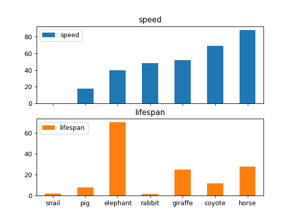
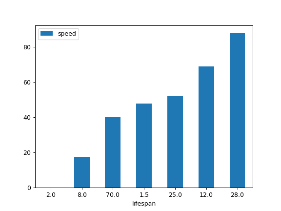

pandas.DataFrame.plot.bar¶
-
DataFrame.plot.bar(x=None, y=None, **kwds)[source]¶ Vertical bar plot.
A bar plot is a plot that presents categorical data with rectangular bars with lengths proportional to the values that they represent. A bar plot shows comparisons among discrete categories. One axis of the plot shows the specific categories being compared, and the other axis represents a measured value.
Parameters: - x : label or position, optional
Allows plotting of one column versus another. If not specified, the index of the DataFrame is used.
- y : label or position, optional
Allows plotting of one column versus another. If not specified, all numerical columns are used.
- **kwds
Additional keyword arguments are documented in
pandas.DataFrame.plot().
Returns: - axes : matplotlib.axes.Axes or np.ndarray of them
An ndarray is returned with one
matplotlib.axes.Axesper column whensubplots=True.
See also
pandas.DataFrame.plot.barh- Horizontal bar plot.
pandas.DataFrame.plot- Make plots of a DataFrame.
matplotlib.pyplot.bar- Make a bar plot with matplotlib.
Examples
Basic plot.
>>> df = pd.DataFrame({'lab':['A', 'B', 'C'], 'val':[10, 30, 20]}) >>> ax = df.plot.bar(x='lab', y='val', rot=0)

Plot a whole dataframe to a bar plot. Each column is assigned a distinct color, and each row is nested in a group along the horizontal axis.
>>> speed = [0.1, 17.5, 40, 48, 52, 69, 88] >>> lifespan = [2, 8, 70, 1.5, 25, 12, 28] >>> index = ['snail', 'pig', 'elephant', ... 'rabbit', 'giraffe', 'coyote', 'horse'] >>> df = pd.DataFrame({'speed': speed, ... 'lifespan': lifespan}, index=index) >>> ax = df.plot.bar(rot=0)

Instead of nesting, the figure can be split by column with
subplots=True. In this case, anumpy.ndarrayofmatplotlib.axes.Axesare returned.>>> axes = df.plot.bar(rot=0, subplots=True) >>> axes[1].legend(loc=2) # doctest: +SKIP
Plot a single column.
>>> ax = df.plot.bar(y='speed', rot=0)
Plot only selected categories for the DataFrame.
>>> ax = df.plot.bar(x='lifespan', rot=0)
